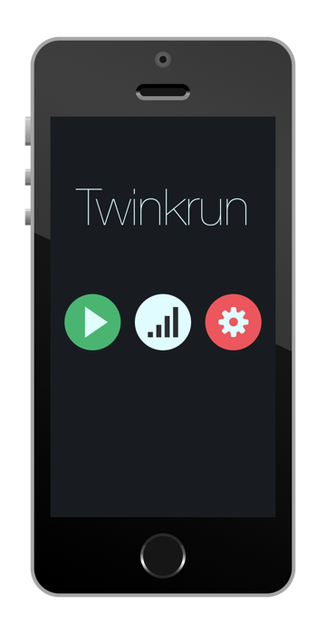

Rule
iOSデバイス(iPhone 4S以降 / iPod touch 第5世代以降)を頭に着けて複数人で遊びます。ゲームを開始すると、画面の色が3秒おきに赤・黒・緑のどれかに変わります。スコアは近くにいるプレイヤーの画面の色によって変化します。赤い画面のプレイヤーは周りのスコアを吸収、緑は放出します。30秒これを繰り返して最終的にスコアの高い人が勝利です。
夜の公園で遊ぶ、最高のアプリケーション。
インディアンポーカー + 鬼ごっこ
iOSデバイス(iPhone 4S以降 / iPod touch 第5世代以降)を頭に着けて複数人で遊びます。ゲームを開始すると、画面の色が3秒おきに赤・黒・緑のどれかに変わります。スコアは近くにいるプレイヤーの画面の色によって変化します。赤い画面のプレイヤーは周りのスコアを吸収、緑は放出します。30秒これを繰り返して最終的にスコアの高い人が勝利です。
単純に赤のプレイヤーから逃げる、緑のプレイヤーを追うだけでも構いません。頭に着けて遊ぶので自分のデバイスの画面が見えないため、相手の動きから自分の色を予測して戦略を立てることが重要です。
Bluetooth 4.0(Low Energy)による実装
Twinkrunのプレイヤー間の通信の実装は、Bluetooth 4.0を用いた距離計測とプレイヤー情報のアドバタイズを使用します。Bluetooth以外の通信は行わないためiPod touchなどの移動通信機能の持たないデバイスでも手軽に遊ぶことができます。(9台まで接続できることを確認)
距離計測は受信電波強度(RSSI)を使い、デバイス間の距離が約3メートルとなるところに閾値を定め、スコアの判定をします。プレイヤーの判別は、BluetoothのAdvertisementDataのLocalNameKeyで行います。LocalNameKeyにはプレイヤー名に色テーブル生成用の乱数シードを付加したものを使用します。これによってコネクションせずに現在の色情報を知ることができます。
iPhoneのスポーツ用アームバンドなどを改造して頭に着けられるようにします。マジックテープ式がお勧めです。バンド拡張用のマジックテープも一緒に用意すると良いです。
Demo Video
KONAMI「モノづくりコンテスト」優秀賞受賞
Twitter : @twinkrun_app